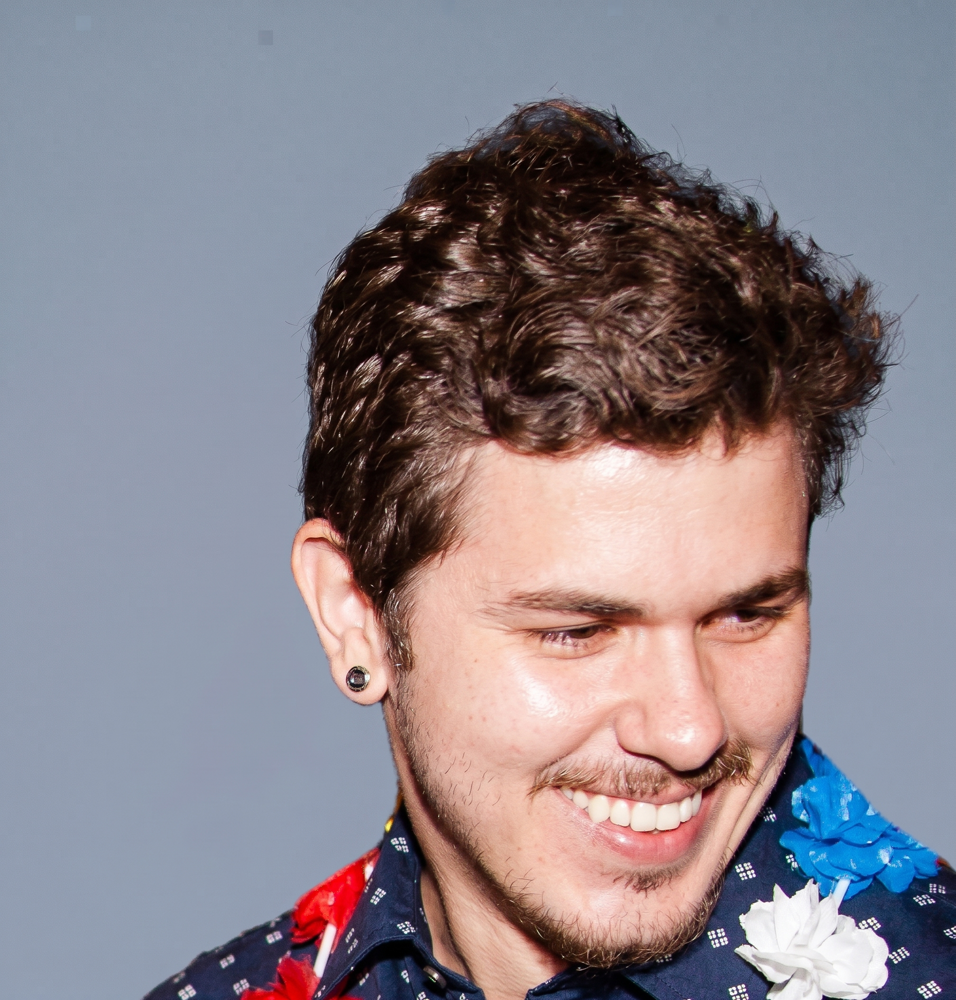

Silas Maciel Ferreira is a backend software engineer based in Campinas, Brazil.

Hi everyone. I'm a backend software engineer focused on building resilient systems, scalable microservices, and clean web applications.
Over more than a decade working with software development, I have helped teams design, ship, and evolve products across different industries—always valuing simplicity, pragmatic architecture, and continuous learning.
How I approach software
Good backend engineering is largely invisible when it works well. My day-to-day work revolves around distributed systems, high-throughput APIs, microservice architectures, and agile collaboration.
Whether untangling legacy bottlenecks or designing a service from scratch, I believe clarity beats unnecessary complexity—and that maintainable code is built through empathy for the next engineer who will read it.
Experience
Currently, I work as a Software Engineer at iFood (since May 2022), contributing to large-scale backend systems. Prior to returning to iFood, I worked at CI&T in early 2022, following an earlier chapter at iFood between 2019 and 2021.
Earlier in my career, I built a solid foundation across full-stack and enterprise development—working as a Systems Analyst at Invillia (2017–2019), and as a Software Developer at Support Informática (2013–2017) and Lecom (2012–2013), after starting out as an intern at Arca Solutions and Grupo Lwart in 2012.
- Software Engineer — iFood May 2022 – Present
- Software Engineer — CI&T Jan 2022 – Apr 2022
- Software Engineer — iFood Apr 2019 – Dec 2021
- Systems Analyst — Invillia Oct 2017 – Apr 2019
- Software Developer — Support Informática Sep 2013 – Jul 2017
- Software Developer — Lecom Nov 2012 – Sep 2013
- Intern — Arca Solutions & Grupo Lwart Feb 2012 – Nov 2012
Education
Alongside industry experience, formal study has always been a way to sharpen fundamentals and explore new perspectives in computing.
- Web Development — Universidade Federal de São Carlos (UFSCar) Feb 2022 – Dec 2023
- Computer Science — Universidade Paulista (UNIP) Feb 2010 – Dec 2013
Beyond code
Outside of engineering, curiosity takes me in a few different directions. I spend time with video games, reading philosophy, watching classic old movies, exploring YouTube recipe videos, and keeping up with a little bit of football.
Get in touch
Based in Campinas, SP, Brazil. If you'd like to talk about backend architecture, engineering opportunities, or just say hello, feel free to reach out.